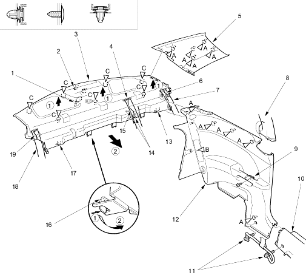

Fastener Locations
A  : Clip, 9B : Clip, 1C : Clip, 7
: Clip, 9B : Clip, 1C : Clip, 7
(White)
Interior Trim
|
20-35 |
NOTE:
Remove the trim as shown. To remove the side trim panel, remove the rear seat-back, refer to the '01 CIVIC Shop Manual, P/N 62S5A00 on this CD (see page 20-95).
Install the trim in the reverse order of removal and note these items:
Fastener Locations
A : Clip, 9B : Clip, 1C : Clip, 7
(White)
 |
|